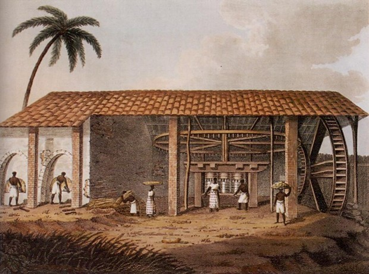
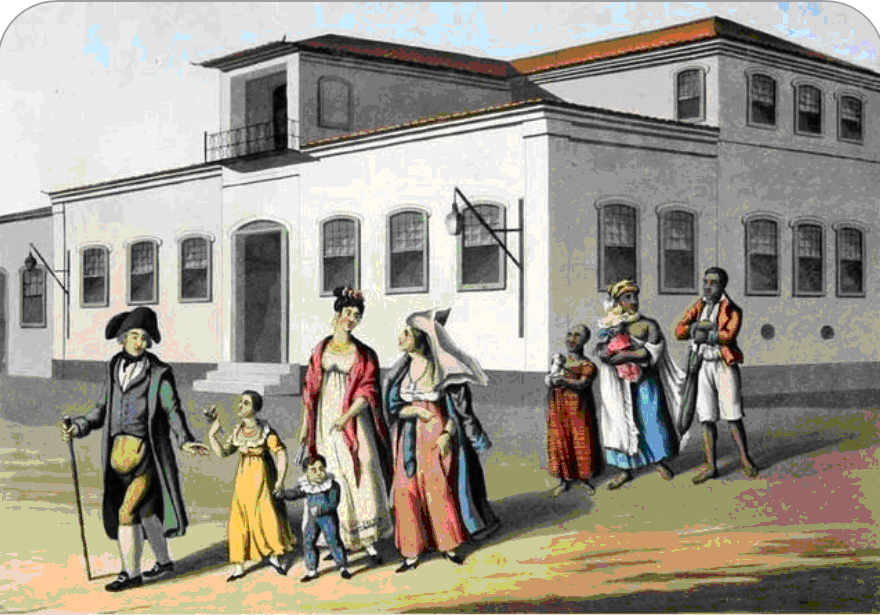

O Brasil foi uma colônia que era usada apenas como meio de extração de produtos, como as plantas e metais preciosos, porém Portugal sempre buscava o máximo de lucro nas terras que possuiam colônias. Para suprir essa necessidade de lucro, os portugueses começaram a pensar em meios de produzir nas terras colonizadas.
E onde entra o açúcar nisso? Criado na Índia, o açúcar refinado atingia preços absurdos na Europa. Após aprenderem os métodos de plantio e preparo, os portugueses iniciaram um projeto de monocultura exportadora, ou seja, plantariam somente a cana-de-açúcar e exportariam o açúcar refinado.
Para construir os famosos engenhos de açúcar, nobres e comerciantes portugueses faziam empréstimos de bancos holandeses.
Todo engenho necessita de trabalhadores, e Portugal que só visava lucrar escravizou os índios para as tarefas, porém não obtiveram sucesso, pois os indígenas não viam sentido no trabalho escravo para a exportação, afinal o estilo de vida que levavam nesse sentido era para a subsistência.
Para seguir com a ideia de comércio, eles escravizaram pessoas pretas para a execução do trabalho, tornando o Brasil um "país" escravista, ou seja, escravos são a maior parte da população e estão envolvidos na maior atividade econômica. Com isso, a mão-de-obra escrava tornou-se a força que movia as fazendas de açúcar.Ao contrário do que pensam, os índios foram substituídos não somente pela força dos novos escravizados, mas sim por terem certa especialização, como por exemplo com as práticas de mineração, além de que a escravidão já era uma instituição existente na África.

Os holandeses desempenhavam um importante papel no refino do açúcar e distribuição para países europeus.
Boa parte dos rendimentos obtidos com o comércio do açúcar ficava com os holandeses, por serem eles os responsáveis por esse processo de comercialização.

A sociedade açucareira era patriarcal. A maior parte dos poderes se concentrava nas mãos do senhor de engenho.
Os senhores de engenho detinham posição mais vantajosa. Possuíam, além de escravos e terras, o engenho.

Os senhores de engenho consideravam os agricultores seus subalternos, que lhes deviam não só cana - de - açúcar, mas também respeito e lealdade.
O senhor de engenho deixava em suas mãos toda a responsabilidade pelo cultivo da cana, assumindo somente a parte do beneficiamento do açúcar, muito mais lucrativa.